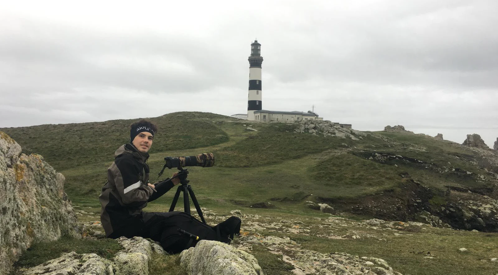
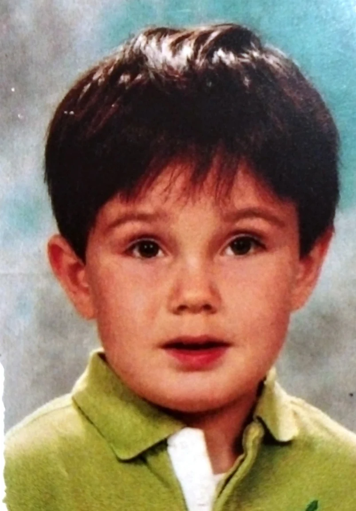

A PROPOS DE MOI

Si vous parcourez ce portfolio, c'est que vous êtes curieux de découvrir mon univers créatif. J'ai conçu ce document comme un véritable voyage au cœur de mes passions et de mon savoir-faire. Vous y explorerez mes réalisations audiovisuelles, mes projets graphiques destinés à l'impression (print), et vous pourrez en apprendre davantage sur les enjeux de ma formation en BUT MMI. L'ensemble des créations personnelles présentées ici n'est pas qu'une simple galerie : c'est le reflet de mon évolution, de ma curiosité et des différentes compétences techniques et artistiques que j'ai acquises. Je vous souhaite une excellente exploration !
Bonjour et bienvenue ! Je m'appelle Sacha GUITTER, je suis étudiant en BUT Métiers du Multimédia et de l'Internet (MMI) et grand passionné de la nature, ce qui m'a naturellement poussé à devenir photographe animalier amateur. À travers l'objectif de mon appareil comme derrière mon écran, j'aime capturer et transmettre des émotions.

LES PHOTOS ET MOI
A. LA PHOTO ANIMALIÈRE
SÉRIE ANIMALIÈRELa photographie animalière est pour moi une école de la patience et de l'observation. À l'affût dans les forêts et marais de la Sarthe et de la Mayenne, chaque prise de vue est une rencontre singulière avec la faune sauvage dans son milieu naturel.
B. LA PHOTO PORTRAIT
SÉRIE PORTRAITAu sein de mon parcours créatif, la photographie de portrait occupe une place singulière. C'est l'exercice où la relation humaine prime sur la technique : savoir mettre à l'aise, capter une expression fugitive, sculpter les ombres et les lumières naturelles ou de studio.
« Chaque visage raconte une histoire unique. Le portrait est pour moi une façon de rendre l'éphémère inoubliable. »Extrait de la Série Portrait
C. LA PHOTO D'ÉVÉNEMENT
SÉRIE REPORTAGELa photo d’événement, pour moi c'est l'art de capturer l'énergie du moment présent sans jamais la perturber. Du concert live aux marches solidaires, il faut anticiper les mouvements, s'adapter instantanément à une lumière changeante et saisir l'émotion brute.
« Le bonheur, c'est d'apprécier les choses simples de la vie. »Extrait de la Série Événements (Octobre Rose)
LES ARTS ET MOI
A. LE PRINT ET LE WEB
CRÉATION PRINT« Une affiche n'est pas qu'un simple support papier, c'est un véritable outil d'expression qui doit interpeller instantanément et faire comprendre au spectateur le message transmis de façon efficace. Créer une affiche, c'est relever le défi de traduire une idée complexe en un visuel clair et mémorable. Mon objectif est de créer une véritable alchimie entre l'impact visuel brut et la fluidité du message. »
Note d'intention Print & DesignB. L'ART DRAW
AFFICHES PERSORecherches graphiques et hommages au design automobile de haute précision : composition modulaire, silhouettes iconiques et contrastes chromatiques audacieux.
MES ÉTUDES ET MOI
A. BUT MMI
PROJETS MMIRéalisations universitaires et projets tutorés au sein du département Métiers du Multimédia et de l'Internet de l'IUT de Laval : direction artistique, modélisation 3D et démarche d'auteur.
B. À CÔTÉ DE MMI
VIE ASSOCIATIVEEngagements associatifs, couverture d'événements étudiants et projets audiovisuels menés en parallèle de la formation.